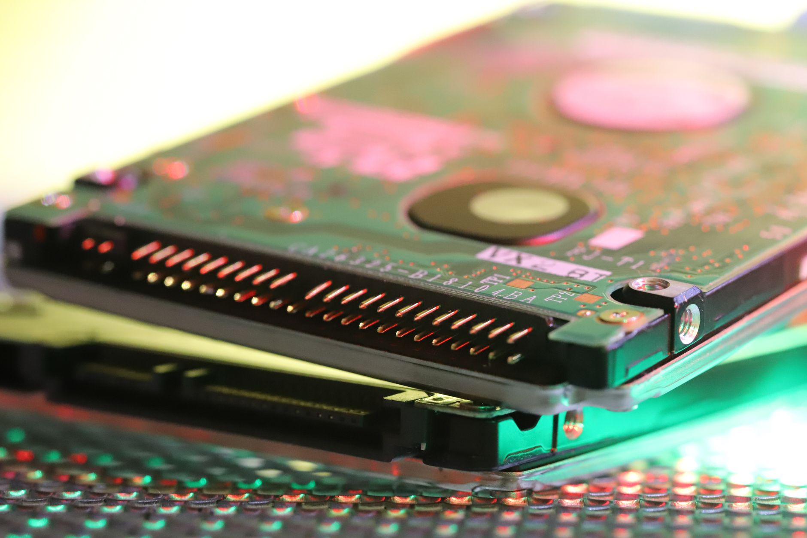

미중 규제 동시 강화, 삼성·SK 이중 고객 이탈 수치화

미국 상무부 BIS는 2025년 4월 엔비디아 H20·AMD MI308 등 중국향 AI칩 수출허가를 전면 철회했고, 2026년 9월에는 추가로 '파운드리 서비스 경유 우회 생산'에 대한 실체적 통제(Rule of 5% de minimis 강화)를 시행했다. 이에 따라 삼성전자 파운드리 부문의 중국 팹리스 고객(CXMT·캠브리콘·바이런 등) 수주 가능 범위가 16nm 이하 공정 기준 사실상 불가 판정을 받았다.
SK하이닉스의 경우 중국 우시 공장에서 생산하는 DRAM의 대(對)중국 현지 고객 공급 비중이 전체 우시 공장 매출의 약 22%인데, BIS의 기술이전 재해석으로 2026년 하반기부터 이 비중의 최소 절반 이상이 공급 불가 영역으로 전환될 수 있다. SK하이닉스는 2026년 2분기 실적발표에서 이 리스크를 공시 위험요인에 처음으로 명기했다.
중국 측도 맞대응에 나섰다. 중국 공업정보화부는 2026년 7월 '반도체 제조 장비 국산화 목표 2030 로드맵'을 발표하며 AMAT·램리서치·도쿄일렉트론(TEL) 장비의 국내 조달 비율을 2030년까지 70%로 끌어올리기로 했다. 이는 삼성·SK가 중국 공장 설비 유지보수에 미국·일본산 장비를 사용하는 구조적 의존성을 직접 타격한다.
반사이익은 TSMC로 집중되고 있다. TSMC의 미국 애리조나 N2 공장(2026년 양산 목표)과 일본 구마모토 2공장(2027년 목표)은 미국 팹리스의 '중국 연루 없는 제조 경로' 수요를 흡수하는 구조로 설계됐다. TSMC는 2026년 2분기 실적에서 북미 고객 매출 비중이 전체의 71%로 사상 최고치를 경신했다고 발표했다.
한국 반도체 업계가 직면한 핵심 딜레마는 '어느 쪽 규제를 따를 것인가'가 아니라 '양쪽 규제를 동시에 피할 수 있는가'다. 미국 규제를 준수하면 중국 매출이 줄고, 중국 공장을 운영하면 미국 고객사의 신뢰 리스크가 생긴다. 이 구조에서 삼성·SK는 선택이 아닌 손실 최소화 경로를 찾는 처지다.
삼성 파운드리 부문의 근본적 문제는 TSMC 대비 공정 기술 격차(현재 3nm GAA 수율 격차 추정 15~20%p)가 여전한 상황에서 중국 고객 이탈까지 겹쳤다는 점이다. 중국 고객 매출이 삼성 파운드리 전체의 약 18%로 추정되는데, 이 수요를 미국·유럽 팹리스로 대체하려면 TSMC 대비 동등 수율 확보가 선결 조건이다.
TSMC가 가장 큰 수혜자다. 미국 팹리스(퀄컴·AMD·브로드컴·마블)의 '중국 비노출 공급망' 수요가 애리조나·구마모토 공장으로 집중되면서, TSMC의 첨단 공정(3nm 이하) 수주 가시성이 2027년까지 확보됐다. 시장조사기관 TrendForce는 2026년 TSMC의 5nm 이하 공정 점유율이 92%에 달할 것으로 추정한다.
인텔 파운드리(IFS)는 반사이익 후보군이지만 조건부다. 미국 정부의 CHIPS Act 보조금 521억 달러 중 85억 달러가 인텔로 배정됐고, '미국산 제조 인증' 수요에서 TSMC 대비 로컬 우위가 있다. 다만 18A 공정의 수율 문제가 해결되지 않으면 실질 수혜로 이어지지 않는다.
삼성전자 파운드리 부문은 중국 고객(추정 매출 기여 18%) 이탈과 미국 팹리스 이원화 흐름이 동시에 작용하며 2026~2027년 가동률 압박이 심화될 전망이다. 특히 평택 P4 라인의 3nm 공정 가동률이 목표치 대비 60% 수준으로 알려져 있어, 신규 고객 없이는 고정비 흡수가 어렵다.
중국 팹리스 캠브리콘·하이실리콘·무어스레드는 삼성·SK 등 외부 파운드리 접근이 막히면서 SMIC 단일 의존 구조로 고착된다. SMIC의 최선단 공정은 7nm급(N+2)이 한계로, 이들의 제품 경쟁력이 2~3세대 뒤처지는 기술 정체가 불가피하다.
삼성·SK 공급망에 의존하는 한국 팹리스 및 시스템반도체 수요 기업은 지금 TSMC·인텔 IFS·글로벌파운드리(GFS)와의 이중소싱 협상을 시작해야 한다. TSMC 접근은 연간 웨이퍼 투입량 기준 최소 1만 장 이상이어야 우선 고객 지위를 확보할 수 있어, 중소 팹리스는 공동 수주 컨소시엄을 검토해야 한다.
투자자 관점에서는 삼성전자 파운드리 부문의 분사(스핀오프) 가능성 뉴스를 주시해야 한다. 분사 시 미국 정부 보조금 신청 적격성이 달라지고, 미국 고객사의 '한국 제조 인증' 신뢰도가 제고될 수 있다. 이는 2027년 이후의 수주 반등 시나리오다.
실제 조달 현장에서는 — 2026년 상반기부터 미국 팹리스 구매팀이 삼성 파운드리와의 기존 계약서에 '중국 제조 시설 비사용 확약(China Manufacturing Exclusion Clause)'을 삽입하라는 요구를 공문으로 발송하고 있다. 삼성이 이를 수용하면 평택 공장 의존도가 높아지고 원가가 오르며, 거부하면 계약 갱신이 불발된다 — 어느 쪽이든 수익성 압박이다.
이 포스팅은 쿠팡 파트너스 활동의 일환으로 수수료를 제공받습니다.